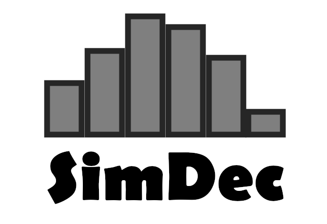
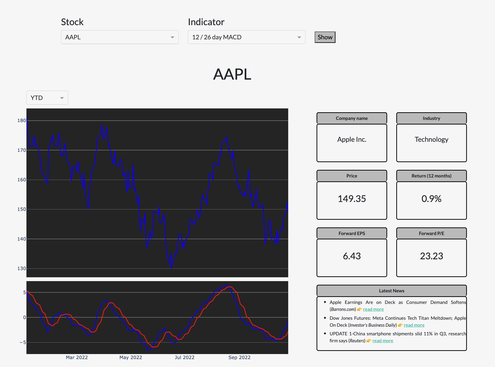

About Me
Hi! I'm Manuel, a technology consultant with focus on technology initiatives in tax & accounting departments. In my work, I combine my experiance as tax consultant and auditor with my passion for software development, innovation and technology.
I hold a Master's degree in Business Administration from the University of Bern (Switzerland) and have more than 4 years of work experience as a tax consultant and auditor at Big 4 accounting firms. During this time, I was working on numerous client projects - both, as a subject matter as well as project management expert.
When the whole world went into a lockdown in early 2020 due to the Covid-19 pandemic, I decided to use this situation as an opportunity to look into software development and IT systems. This decision was on one hand motivated by my interest in solving complex problems, on the other hand I also experienced during my professional work that the alignment between functional and IT workstreams is one of the most important and most challenging factors for the successful completion of major tax and accounting projects.
After a year+ of self-studying, I enjoyed my new hobby so much that I decided to join Hive Helsinki (a project oriented coding school, which is part of the 42 school network) in fall 2021. Since early 2022, I am working as a technology consultant and as lead developer for SimDec (cf. project section below) on my quest to bridge the gap between finance and IT.
Projects
Technology Consulting

As a technology consultant, I supported clients on the following projects:
- Software implementation: I managed the implementation of a new project management software for an international client. My responsibilieties included project coordination, requirements gathering, process re-design / standardization and development of a tool to add client specific functionalities to the software.
- Process automatisation: I created a report template for a client which gets populated automatically based on relevant input factors.
- Data analytics: Creation of a dashboard for a SME client. The dashboard collects data from multiple data sources, analyses trends in the data and displays the trends as well as KPIs to the user.
SimDec

SimDec is a new generation sensitivity analysis solution. SimDec provides unique, actionable insights into complex analytical models and therewith helps to make more informed decisions. To see SimDec in action, visit our electricity bill simulator to figure out how you can efficiently reduce your electricity costs.
SimDec currently runs pilot tests with potential clients with a VBA Excel add-in. Simultaniously, we are developing an Excel web add-in which uses Microsoft's Office JavaScript API and which will be used for commercial purposes. Finally, we are developing a cloud solution for SimDec, which can be integrated into other tools through an API.
As lead developer at SimDec, my responsibilities include:
- shaping the commercial strategy of SimDec as part of the core management team;
- the development and implementation of an IT strategy, which is in-line with SimDec's business mission;
- the development and management of SimDec tools; and
- hiring and supervising the SimDec and external developer teams.
Stock market monitoring tool

The stock market monitoring tool is a webpage that allows users to display stock prices and selected technical indicators for certain stocks. The webpage is built with Plotly / Dash for python. I also created the functions to calculate the technical indicators in python. The source code for the webpage can be found on my GitHub page.
Hive Helsinki

Hive is a new kind of coding school where students exclusively focus on hands-on coding projects. Hive is part of the 42 school network and aims to prepare students to enter the job market as software developers.
The primary coding language, which is used at the school, is C. A key concept of 42 schools is that students are not allowed to use any libraries or functions that they have not coded themselves. This ensures that students obtain a sound understanding of coding basics such as memory management. Other skills, which are required to successfully complete the projects, are - amongst others - command line navigation, bash scripting, ability to develop algorithms / AI and a basic understanding of system administartion.
Visit my GitHub repositories for more details about my Hive projects.
Skills
Contact
Do you have an interesting project? I would love to hear about it!